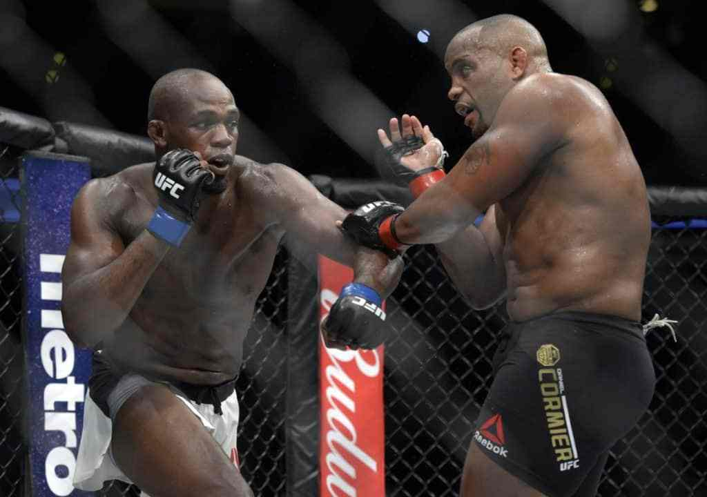
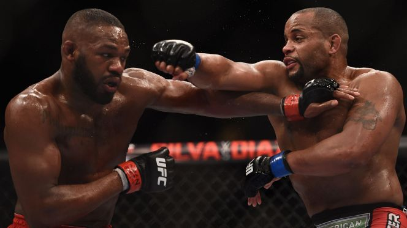

The Jones Rivalry Over, What's Next For Daniel Cormier?
August 28,2017 by Ricardo Montero

At 38 years old, there is very little in the mixed martial arts (MMA) world that Daniel “DC” Cormier has not done. He is a former Team USA Olympic Freestyle Wrestling captain, he is the former Strikeforce Heavyweight Grand Prix champion, he is undefeated in the UFC Heavyweight division, he is the former UFC Light Heavyweight champion, he went undefeated for 15 fights in his professional MMA career, he fought and dominated top contenders, and until UFC 214 last Saturday night (July 29, 2017), he had never been finished in a fight.
“DC” has done it all; that is, except defeat his greatest enemy, Jon “Bones” Jones.
Unfortunately for Cormier, his greatest rival also happens to be one of – if not the – greatest fighters of all-time, and their long-awaited rematch at UFC 214 in Anaheim, California, only served as more proof that Jones is simply the superior fighter.
Cormier’s record of 19-2 would be a respectable one for any fighter, especially given the caliber of fighters that “DC” has managed to beat. But it does not matter how many more number one contenders he beats, his inability to defeat Jones will forever haunt him. Cormier and Jones had a rivalry for the ages. “DC” was the aging, honorable champion with something to prove, while Jones was the troubled young man with the touch of greatness
“DC” was looking to avenge his one loss and prove to the fans he was the true champion, while Jones was looking to redeem himself and make up for the time lost. It was a classic clash of yin and yang, Rocky Balboa vs. Apollo Creed, the Cubs vs. the Indians, Ali vs. Frazier.
The rematch between the two had been rescheduled and postponed so many times that many fans wondered whether or not it would ever actually happen. Jones was dealing with personal issues, legal troubles and suspensions while Cormier dealt with injuries, and for over two years, “DC” reigned as the champion in “Bones’” absence.
Last night, many questions that loomed over the two best light heavyweights of all-time were answered. Would Jones’ performance be affected by his time away from the Octagon? Had “DC” made the right adjustments since their first fight to deal with Jones’ reach? Will this fight determine if Jones really is the greatest fighter of all-time?
In 13 minutes, Cormier showed how much he had improved since their first fight. He was aggressive and focused, taking control of the center of the Octagon and even getting the best of some boxing exchanges. He landed some excellent leg kicks and knocked Jones’ mouthpiece out with a nice uppercut early in the first round.
However, in the same 13 minutes, Jones showed why he is the greatest light heavyweight, and maybe even the greatest fighter, in UFC history. He withstood some hard right hands from “DC,” peppered him with his kicks, briefly took the Olympian wrestler down, and stayed ahead of the former champion in overall strikes.
But the decisive moment came by way of a devastating left high kick by Jones that connected flush to Cormier’s chin. After working the body for two rounds, Jones threw the kick at Cormier, who defended the body and left his face unprotected, and hurt “DC” badly. “DC” stumbled across the Octagon and crashed against the cage, with Jones following closely behind, sensing the kill. Jones pinned him against the face and pounded Cormier’s temple until “DC” went unconscious.
Referee “Big” John McCarthy gave Cormier more than enough time to recover, as he has been known to come back from being hurt before. But there was no coming back from that head kick, and “DC” took way too many unnecessary punches to the head. He was still wobbly minutes after the stoppage.
After the fight, both fighters showed signs of wanting to move on from the rivalry.
In his post-fight interview, Jones said:
"I want to take this time to thank Daniel Cormier. My biggest rival and motivator. Daniel Cormier, guys, he has absolutely no reason to hang his head. He has been a model champion, a model husband, a model father, a teammate, leader and I aspire to be a lot more like that man because he is an amazing human being. Unfortunately we are opponents, but outside of that, he is a true champion for the rest of his life.""
It seems that the new champ is marking an end to the rivalry, as he proceeded to call out former UFC heavyweight champ Brock Lesnar, who still has six months left on a suspension due to a USADA anti-doping violation. Although Lesnar announced in February that he was retiring from MMA, he also accepted the challenge from Jones saying that he will fight him “anytime, anywhere.”
On the other hand, Cormier also showed signs of moving on from the rivalry, although begrudgingly. In his post-fight interview, Cormier said:
“If you win both fights, then there is no rivalry.”
Questions will arise to what is next for Cormier. Good match-ups could still be made for him in the light heavyweight division, perhaps against rising knockout artist Volkan Oezdemir, Glover Teixeira, or a rematch against Alexander Gustafsson, but at this point, it’s up to Cormier.
However, if “DC’s” goal is to win the title and retire as the champion, it is probably better he moves back up to heavyweight. Another fight with Jones might get stale for the fans and may not be the best thing for Cormier’s career, but it is hard to imagine “DC” would reinvent his career at 38 years old.
The only reason Cormier is fighting at light heavyweight in the first place is because he did not want to clash with heavyweight great and teammate Cain Velasquez, but Velasquez is still suffering from continuous injuries, so perhaps it is time for “DC” to move up in weight.
It was tough to see a hard worker and model champion like Cormier get defeated in such a violent fashion by his greatest rival, especially since “DC” had never been knocked out. But sometimes in life, the “good guy” doesn’t win, and poetic justice doesn’t exist in the fight game.
At the end of it all, we walked away from UFC 214 knowing that the only person who can defeat Daniel Cormier is Jon Jones, and the only person who can defeat Jon Jones is himself.